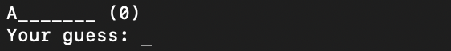
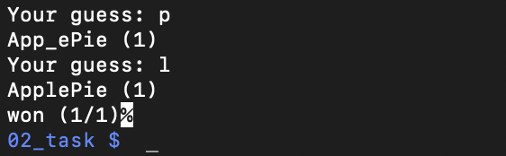

Make a playable Hangman Game, programmed in the language C!
Hangman is a paper and pencil guessing game for two or more players. One player thinks of a word and the other(s) tries to guess it by suggesting letters within a certain number of guesses.
The game needs a word to start, which is provided in a seperate config file.
The user needs to input his guess.
Since this is a console game and no other visualization is implemented, the IDE was
not that important. I chose Visual Studio Code (vsc), since it is my main text editor.
I programmed on MacOS and used the terminal for compiling and executing the program. Since
the reference OS of the University (Technical University of Graz) was Linux, i used an external
linux Server to test the game. I reached it with an ssh connection via the macOS terminal.
The usage of external libraries was prohibited (expect the standard libraries). To make it run,
I used three different libraries:
- stdio.h
- stdlib.h
Memory management is very important, when you program in C, so i had to allocate, reallocate and
free the space i needed. For checking if everything worked correct, I used Valgrind at the external
Linux System.
The whole purpose of the program was, to pass a subject for my Degree in Computer Science. the subject was named "Programming 1", where I made other small projects like Solitair or the Caesar Encryption, which are also shown on the website. The main Goal of the Subject was, to teach the fundamentals of the programming language C.
I learned the fundamentals of the programming language C and the importance of efficient memory management. I learned how to use References and Pointers.
To make the program work, i used:
- 425 lines of code
- 9 functions
Gamefield
Character can now be entered. For example we guess the character a
Since 'A' is already revealed, there can not be other 'A's in the word, but it was not
wrong, so we dont get a minus point. Next try is e
Right choice, showing us new informations. Let's go with i
Also right, now lets make a wrong choice, by guessing o
Wrong, so the counter went from (0) to (1). Let's end this game and win.
If you want to play more games, you can stack the words in the config file and
the game will proceed, after the first word was guessed, with the second word.
Let's try to lose a game to see the outcome. I added a second word to show how
the program handles it.
The ApplePie (x.x) output shows the user the word he didn't guess.